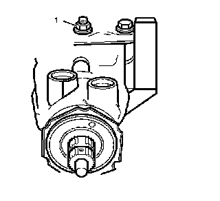
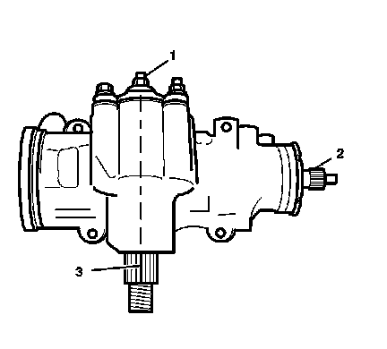
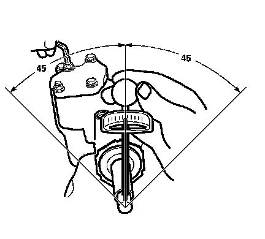

Steering Gear Pitman Shaft Over-Center Preload Adjustment - Off Vehicle
Steering Gear Pitman Shaft Over-Center Preload Adjustment - Off Vehicle

1. Loosen the lash adjuster lock nut (1).
2. Turn the pitman shaft adjuster screw counterclockwise until fully extended.
3. Turn the pitman shaft adjuster screw clockwise 1 full turn.
4. Rotate the stub shaft from stop to stop, using 12-point socket while counting the number of turns.
5. Starting at either stop, turn the stub shaft back half the total number of turns. This is the CENTER of the gear.

6. Make sure the gear is centered by checking the following items:
^ The flat on the stub shaft (2) faces upward.
^ The flat on the stub shaft is parallel with the side cover.
^ The master spline (3) on the pitman shaft is in line with the adjuster screw (1).

7. Place a torque wrench on the stub shaft with the handle in the vertical position.
8. Rotate the stub shaft 45 degrees from each side of the center of the stub shaft. The stub shaft must rotate smoothly and must not stick or bind.
9. Record the worm bearing preload measured on or near the center.
10. Recorded bearing preload must be 0.7-1.7 N.m (6-15 lb in), with the worm and the ball nut installed. If the torque is outside this range, readjust or repair the steering gear assembly as required.
11. To obtain the correct preload torque, adjust the over center torque by turning the pitman shaft adjuster screw clockwise.
12. Add 0.7-1.1 N.m (6-10 lb in) torque to the previously measured worm bearing preload torque.
Notice: Refer to Fastener Notice.
Tighten the lash adjuster lock nut to 49 N.m (36 lb ft).
^ Prevent the adjuster screw from turning while tightening the lash adjuster lock nut.
^ Install the steering gear into the vehicle.
^ Bleed the power steering system. Refer to Power Steering System Bleeding.